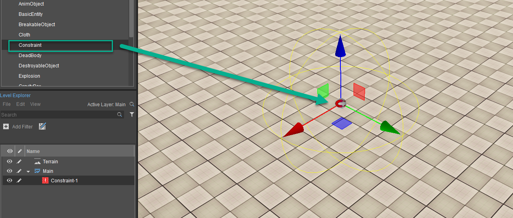
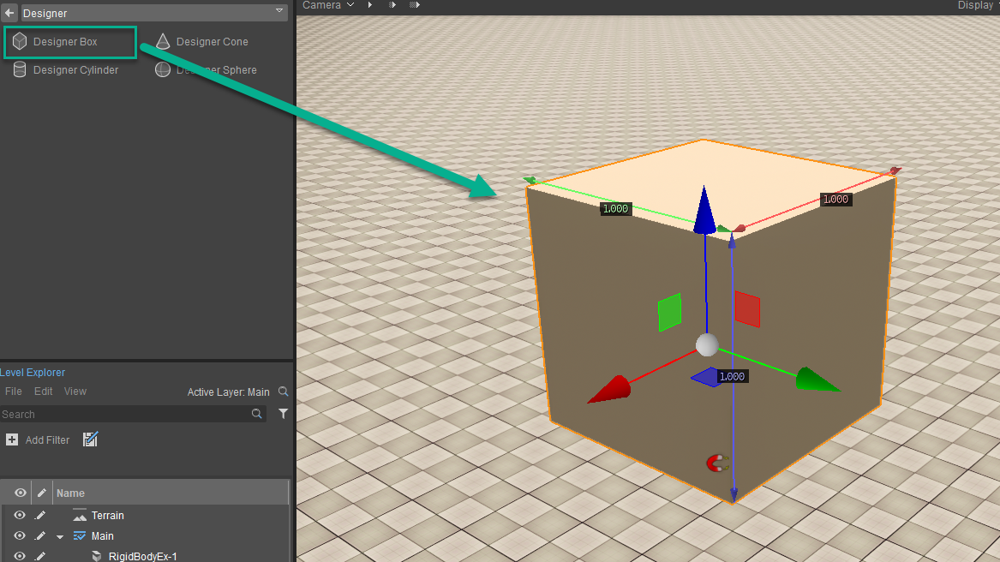
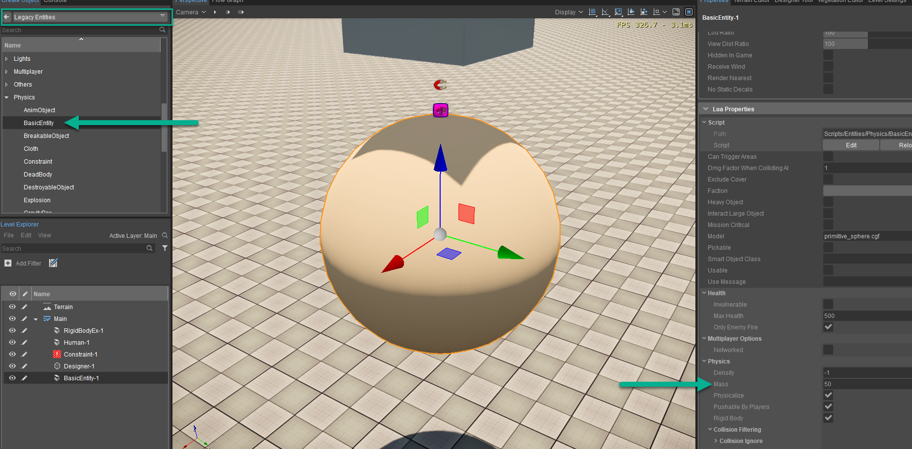
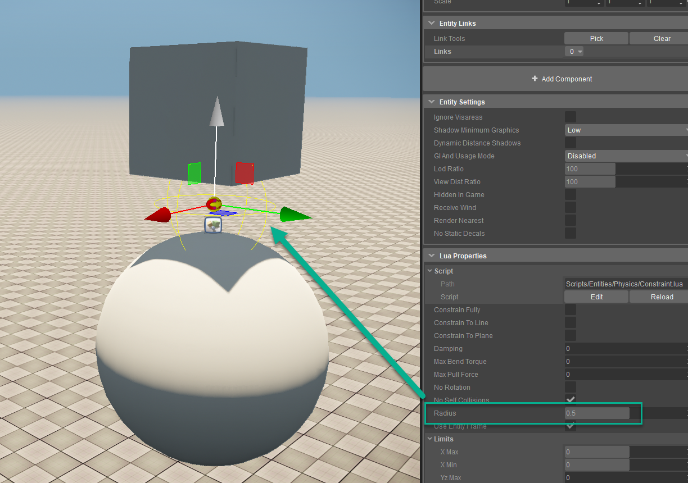
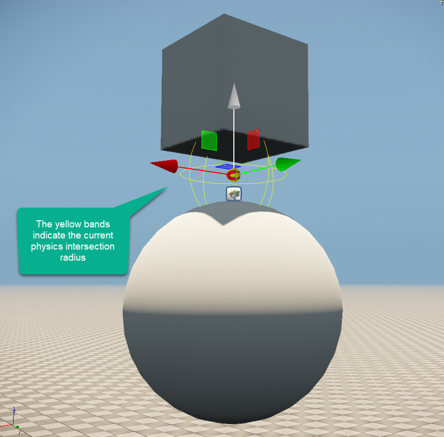
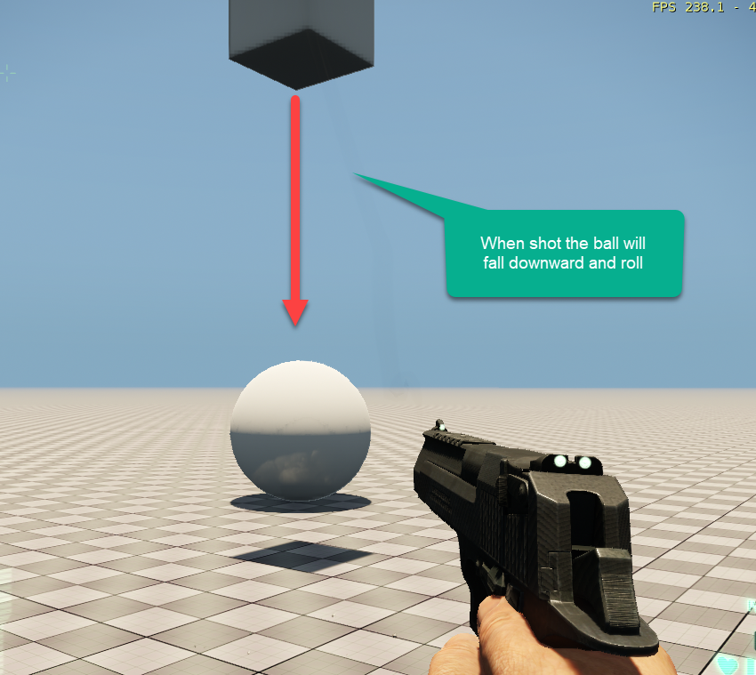

Примечание. Здесь представлена более новая версия этого руководства для компонентов сущностей.
Что возможно с ограничениями?
Во время дизайна уровней вы сталкиваетесь с необходимостью удерживать объект на месте, чтобы он вращался по оси или просто отрывался при попадании в него физического импульса (рукопашного боя или пули). Здесь в игру может вступить сущность ограничения, поскольку вы можете просто расположить два объекта в пределах объема или радиуса ограничения. В зависимости от их динамических свойств у вас может быть твердый объект, который является основой, или два объекта, которые полностью динамичны, но связаны друг с другом и вращаются вокруг одной точки поворота.
Наряду с полностью ограниченным объектом у вас есть возможность ограничиться одной осью или, возможно, плоскостью, где вы можете объединить две оси. Ярким примером может быть зиплайн. Для этого вам нужно будет ограничить одну линию, чтобы добраться до конца, или, если хотите, ограничить сущность/игрока одной осью или плоскостью, чтобы воспроизвести классику, такую как Pac-Man.
Объем по умолчанию называется Ограничительная рамка и может работать так, как мы описали ранее. Это также позволяет вам определить рамку как само ограничение, что открывает возможность рассматривать исходное ограничение как шарнир, если Использовать фрейм сущности выбран. Ниже приведены еще несколько свойств более подробно:
- Демпфирование - Устанавливает силу демпфирования движения объекта. ВтПри контакте нескольких объектов для всей группы используется максимальное демпфирование.
- Макс. крутящий момент изгиба - Максимальный изгибающий момент (в настоящее время он проверяется только для ограничений шарнира, достигших одного из пределов x).
- Макс. сила тяги - Указывает максимальную силу растяжения, которую может выдержать ограничение.
- Никаких самостолкновений - Отключает проверку столкновений между ограниченными объектами.
- Радиус - Определяет сферическую область для поиска присоединяемых объектов.
- Использовать фрейм сущности - Определяет, использовать ли первый найденный объект или само ограничение в качестве рамки ограничения.
Создание нашего ограничения
Вам необходимо выполнить следующие шаги, указанные ниже. чтобы создать ограничение, при котором вы можете стрелять во время игры:
- Перейти к Создать объект -> Устаревшие объекты -> Физика -> Ограничение и перетащите его на свою сцену
- Создайте окно Designer с помощью Создать объект -> Дизайнер -> Коробка и перетащите его на нашу сцену так, чтобы он располагался поверх ограничения. В этом примере эта коробка будет служить потолком.
- Теперь, когда потолок и ограничение установлены, перейдите к Создать объект -> Устаревшие объекты -> Физика -> Базовый объект и поместите эту сферу ниже объекта ограничения. Это будет объект, который мы будем стрелять и отламывать. Прокрутите вниз в Свойства панель и отрегулируйте Масса чтобы 50 чтобы оно упало как надо.
- Когда все будет на месте, выберите ограничение и отрегулируйте Радиус так что каждый из физических прокси на объектах пересекается и знает, как удерживать точки при активации гравитации.
- Наконец, мы можем запрыгнуть на карту (Ctrl+Г) и стреляйте по мячу, чтобы увидеть, как он упадет с подвесного потолка и покатится по местности.
Шаг 1

Шаг 2

Шаг 3

Шаг 4-1

Шаг 4-2

Шаг 5
